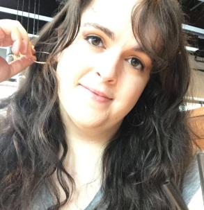

Eager and engaged professional new to the web development industry. I bring a love of problem-solving to the work that I do, whether back-end, front-end, or full stack, and pride myself on my upbeat attitude, humor, and commitment to working inside a time table.
Skills
Front-End
JavaScript, React, Enzyme, jQuery, HTML5, CSS3.
Back-End
Node.js, DBeaver, Mocha & Chai, Passport, Postman, REST APIs 3.
Dev Tools
Git, GitHub, Chrome Dev Tools, Heroku, Vercel.
- Education
-
Widener University
Major: History
Minor: Gender & Women's Studies
Awards: Dean's List (2015), Phi Alpha Theta Regional Conference Award for "'I Cried Out!': Recovering the Lost Voices of Freedwomen in Reconstruction Race Riots" (2018).
- Experience
-
Thinkful Apprentice Web Developer - 2020-Present
- Completed 800+ hours of online learning geared towards fullstack web development, including best practices and industry standards.
- Created several full-stack applications, both solo, paired, and as part of a group.
Sally Beauty Beauty Advisor - Newark, DE - 2019-2020
- Assisted customers by providing specialized product knowledge.
- Handled cash transactions including purchases, returns, and exchanges.
Theta Delta Sigma Society, Inc. Vice President - 2018-2019
- Assisted the Society President in the execution of their duties, including co-chairing bi-weekly meetings of the Board and working with university officials representing institutions expressing interest in inviting Theta Delta Sigma to expand on their campus.
- Oversaw the nine members of the Operations Team, which handled duties including communications, technology, intake, professional development, and national service initiatives.
- Carried out administrative tasks such as editing minutes, transcribing membership review interviews, and processing New Member applications.
Theta Delta Sigma Society, Inc. Director of Collegian Affairs - 2017-2018
- Facilitated conflict resolution between collegiate members and chapters by providing mediation and team-building materials and seminars.
- Hosted National town halls aimed at discussing cultural and societal issues affecting the organization, including helping to define the Society's positions on collegiate members participating in protests and marches.
Widener University Archives Student Assistant - 2015-2016
- Digitized and organized materials and artifacts in the Widener University Archives, including photo albums, letters, and yearbooks.
- Coordinated with the Archives staff to create online exhibits for the Wolfgram Memorial Library website utilizing archives materials.
- Helped managed the Pennsylvania Military Academy alumni pages on social media and communicated with alumni directly to help them access archives materials for use in reunions.
- Hobbies
- Historical Reproduction costuming, Tabletop RPGs, PC Gaming.